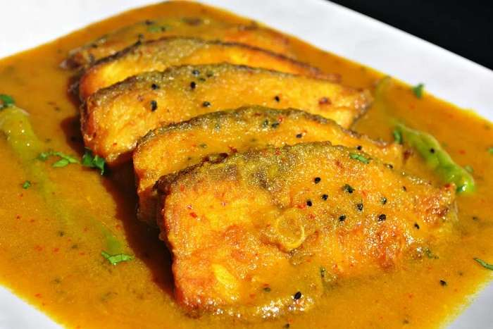
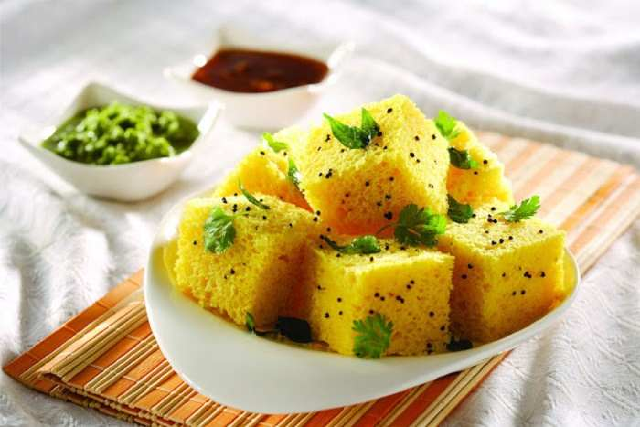
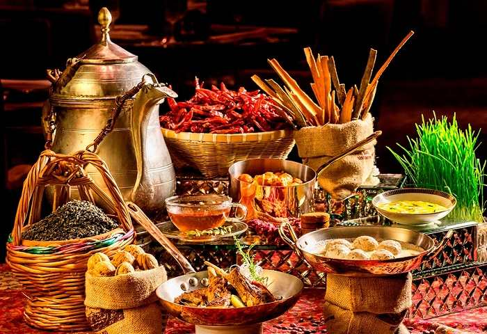
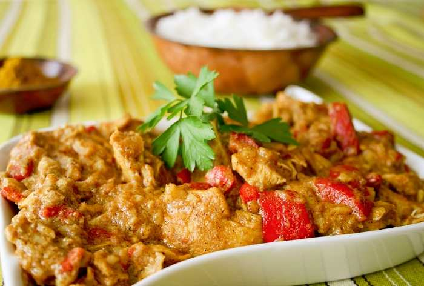
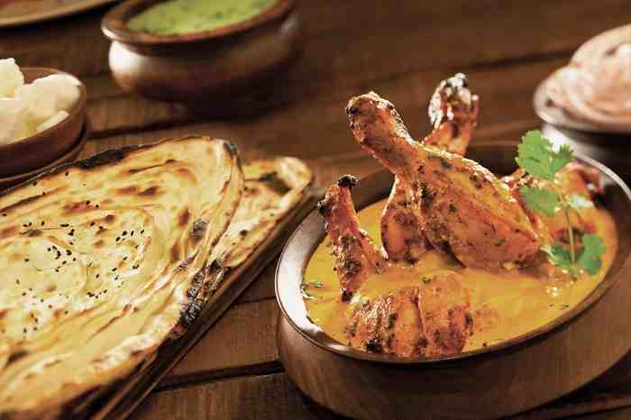
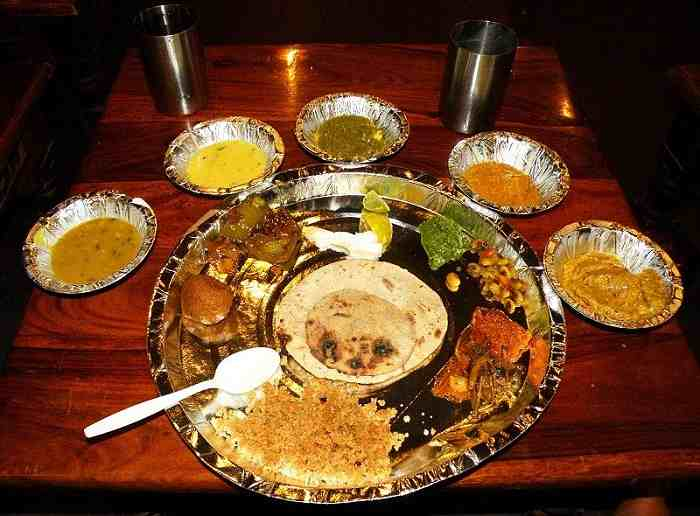

Culture Indian:Indian Food
Indian Food
The traditional food of India has been widely appreciated for its fabulous use of herbs and spices. Indian cuisine is known for its large assortment of dishes. The cooking style varies from region to region and is largely divided into South Indian & North Indian cuisine.India is quite famous for its diverse multi cuisine available in a large number of restaurants and hotel resorts, which is reminiscent of unity in diversity. The staple food in India includes wheat, rice and pulses with chana (Bengal Gram) being the most important one. In modern times Indian pallete has undergone a lot of change. In the last decade, as a result of globalisation, a lot of Indians have travelled to different parts of the world and vice versa there has been a massive influx of people of different nationalities in India. This has resulted in Indianisation of various international cuisines. Nowadays, in big metro cities one can find specialised food joints of international cuisines. To know more about the Indian traditional food, read on.
Bengali Food
Bengali cuisine is appreciated for its fabulous use of panchphoron, a term used to refer to the five essential spices, namely mustard, fenugreek seed, cumin seed, aniseed, and black cumin seed. The specialty of Bengali food lies in the perfect blend of sweet and spicy flavors.
Gujarati Food
The traditional Gujarati food is primarily vegetarian and has a high nutritional value. The typical Gujarati thali consists of varied kinds of lip smacking dishes. Gujarati cuisine has so much to offer and each dish has an absolutely different cooking style.
Kashmiri Food
Kashmiri food that we have today in the restaurants has evolved over the years. Highly influenced by the traditional food of the Kashmiri pundits, it has now taken some of the features of the cooking style adopted in Central Asia, Persia and Afghanistan.
Mughlai Cuisine
Mughlai cuisine is one of the most popular cuisines, whose origin can be traced back to the times of Mughal Empire. Mughlai cuisine consists of the dishes that were prepared in the kitchens of the royal Mughal Emperors. Indian cuisine is predominantly influenced by the cooking style practiced during the Mughal era.
Punjabi Food
The cuisine of Punjab has an enormous variety of mouth-watering vegetarian as well as non vegetarian dishes. The spice content ranges from minimal to pleasant to high. Punjabi food is usually relished by people of all communities. In Punjab, home cooking differs from the restaurant cooking style.
Rajasthani Food
The cuisine of Rajasthan is primarily vegetarian and offers a fabulous variety of mouthwatering dishes. The spice content is quite high in comparison to other Indian cuisines, but the food is absolutely scrumptious. Rajasthanis use ghee for cooking most of the dishes. Rajasthani food is well known for its spicy curries and delicious sweets.
South Indian Cuisine

The cuisine of South India is known for its light, low calorie appetizing dishes. The traditional food of South India is mainly rice based. The cuisine is famous for its wonderful mixing of rice and lentils to prepare yummy lip smacking dosas, vadas, idlis and uttapams.